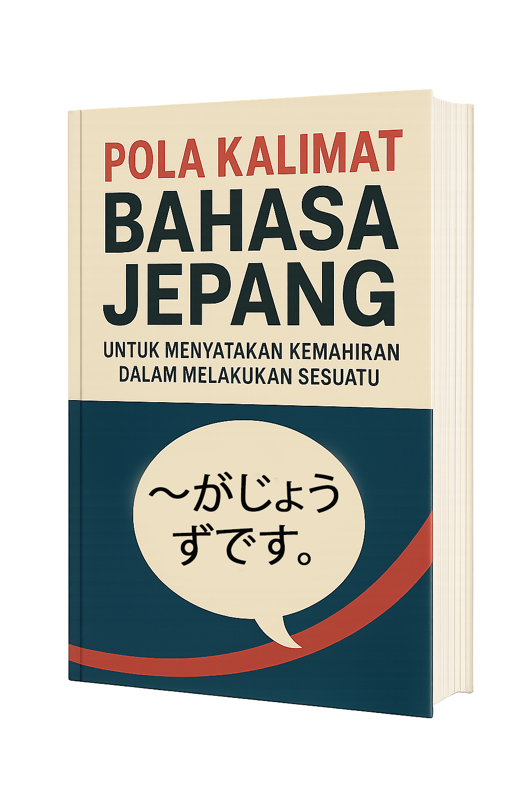
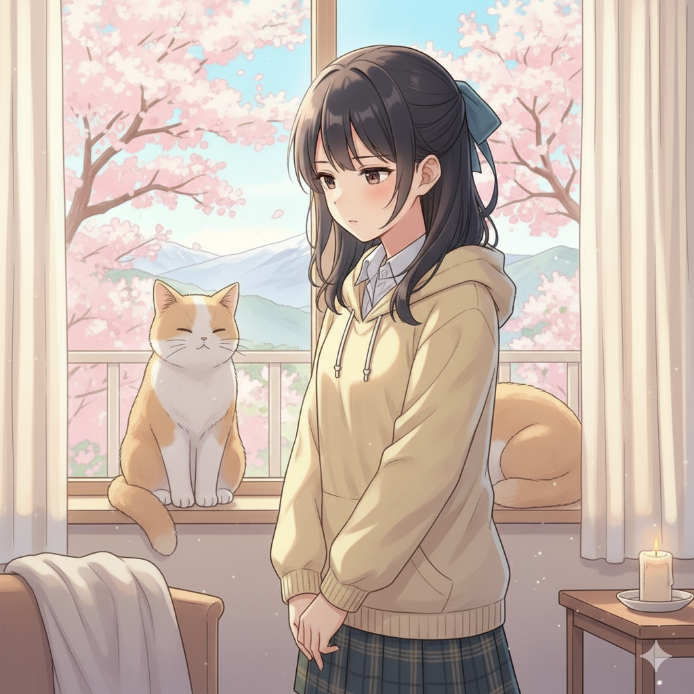

Selamat datang di modul pembelajaran digital Bahasa Jepang untuk pemula
Website ini dibuat untuk mendukung proses pembelajaran yang
lebih fleksibel, interaktif, dan mudah diakses di mana saja.
Pendahuluan
Pada modul ini, kita akan mempelajari pola kalimat 「〜がじょうずです」 yang digunakan untuk menyatakan bahwa seseorang pandai atau mahir dalam melakukan suatu hal. Tidak hanya itu, terdapat banyak kosakata baru dan juga materi tambahan sebagai penunjang belajar yang tidak kalah penting. Materi ini akan disajikan secara sederhana agar mudah dipahami, dilengkapi dengan contoh kalimat dan latihan soal sebagai penguat pemahaman. Melalui website ini, diharapkan pembelajaran bahasa Jepang menjadi lebih menyenangkan dan membantu kalian dalam memperluas kemampuan berbahasa. Sehingga, diharapkan peserta didik dapat memahami, menulis, dan mempresentasikan kalimat yang menyatakan kemahiran dalam bahasa Jepang dengan baik dan benar. Selamat belajar dan semoga bermanfaat!
Tujuan Website Pembelajaran
1. Memahami makna dan penggunaan pola kalimat 「〜がじょうずです。」 dalam Bahasa Jepang.
2. Menyebutkan kosakata yang berkaitan dengan kemahiran diri sendiri maupun orang lain dengan pola kalimat sederhana.
3. Menunjukkan sikap percaya diri saat menyampaikan kemahiran diri menggunakan Bahasa Jepang.
Petunjuk Penggunaan Website Pembelajaran
Baca pendahuluan materi terlebih dahulu.
Sebelum memulai, pahami tujuan pembelajaran dan materi utama yang akan dipelajari dalam modul ini.
Pelajari materi secara berurutan.
Materi telah disusun dari penjelasan dasar, contoh kalimat, hingga latihan soal. Disarankan untuk tidak melewati setiap bagian agar pemahaman lebih menyeluruh.
Perhatikan contoh kalimat.
Setiap pola kalimat dilengkapi contoh dan arti. Bacalah dengan saksama untuk memahami cara penggunaannya dalam konteks nyata.
Catat poin penting.
Jika ada bagian yang penting atau sulit dipahami, catat dan ulangi kembali bagian tersebut hingga benar-benar paham.
Kerjakan latihan soal.
Gunakan latihan soal untuk mengukur pemahamanmu. Cobalah menjawab terlebih dahulu sebelum melihat pembahasan.
Akhiri dengan refleksi.
Setelah menyelesaikan materi, luangkan waktu sejenak untuk merefleksikan apa saja yang sudah dipelajari.
POLA KALIMAT BAHASA JEPANG UNTUK MENYATAKAN KEMAHIRAN DALAM MELAKUKAN SESUATU
Daftar Kosakata
1. Kemahiran
| Kosakata | Romaji | Arti |
|---|---|---|
| え | E | Gambar, lukis |
| うた | Uta | Lagu |
| ダンス | Dansu | Menari, dance |
| スポーツ | Supōtsu | Olahraga |
| がっき | Gakki | Alat musik |
2. Bahasa Asing
| Kosakata | Romaji | Arti |
|---|---|---|
| にほんご | Nihon-go | Bahasa Jepang |
| えいご | Ei-go | Bahasa Inggris |
| かんこくご | Kankoku-go | Bahasa Korea |
| アラビアご | Arabia-go | Bahasa Arab |
| フランスご | Furansu-go | Bahasa Prancis |
| ちゅうごくご | Chūgoku-go | Bahasa Mandarin |
3. Olahraga
| Kosakata | Romaji | Arti |
|---|---|---|
| バドミントン | Badominton | Badminton |
| サッカー | Sakkā | Sepak bola |
| バスケットボール | Basuketto bōru | Bola basket |
| テニス | Tenisu | Tenis |
| バレーボール | Barēbōru | Bola voli |
| からて | Karate | Karate |
| シラット | Shiratto | Silat |
| すいえい | Suiei | Berenang |
| サーフィン | Sāfin | Surfing |
4. Alat Musik
| Kosakata | Romaji | Arti |
|---|---|---|
| ギター | Gitā | Gitar |
| ピアノ | Piano | Piano |
| キーボード | Kībōdo | Keyboard |
| ベースギター | Bēsu gitā | Gitar bass |
| ドラム | Doramu | Drum |
| がメラン | Gamuran | Gamelan |
| アンクルン | Ankurun | Angklung |
| ヴァイオリン | Vaiorin | Violin |
| ハーモニカ | Hāmonika | Harmonika |
| レバナ | Rebana | Rebana |
5. Kata Sifat (-na)
| Kosakata | Romaji | Arti |
|---|---|---|
| ギター | Gitā | Gitar |
| ピアノ | Piano | Piano |
| キーボード | Kībōdo | Keyboard |
| ベースギター | Bēsu gitā | Gitar bass |
| ドラム | Doramu | Drum |
| がメラン | Gamuran | Gamelan |
| アンクルン | Ankurun | Angklung |
| ヴァイオリン | Vaiorin | Violin |
| ハーモニカ | Hāmonika | Harmonika |
| レバナ | Rebana | Rebana |
Tujuan Pola Kalimat
1. 「~がじょうずです」 digunakan untuk menyatakan mengakui
kepandaian, kemahiran, keterampilan orang lain dalam suatu
hal.
2. 「~がへたです」 digunakan untuk menyatakan kemampuan
seseorang atau diri sendiri yang kurang baik dalam melakukan
sesuatu.
3. 「~がとくいです」 digunakan untuk memperkenalkan kemahiran
diri sendiri kepada orang lain dalam suatu hal.
Pola Kalimat
KB (orang) は KB (hal) がじょうずです。
KB (orang) wa KB (hal) ga jōzu desu.
KB (orang) は KB (hal) がへたです。
KB (orang) wa KB (hal) ga heta desu.
KB (orang) は KB (hal) がとくいです。
KB (orang) wa KB (hal) ga tokui desu.
Contoh Kalimat
ミタさんはギターがじょうずです。 Mita san wa gitaa ga jouzu desu.
たなかさんはダンスがへたです。 Tanaka san wa dansu ga heta
desu.
Pak Tanaka tidak pandai menari
わたしはえいごがとくいです。 Watashi wa eigo tokui desu.
Saya mahir bahasa Inggris.
Macam-macam Ungkapan Jawaban
「まだまだです」 (Mada mada desu)
Ungkapan yang digunakan untuk merendahkan diri saat dipuji orang lain perihal kemahirannya.
「すごいですね」 (Sugoi desune)
Ungkapan yang digunakan untuk mengakui kehebatan, kemahiran seseorang dalam hal tertentu katakanlah “Sugoi desune!”
💬 Contoh Percakapan
Pola Kalimat: Kemahiran dalam Melakukan Sesuatu
ライラ：
えいごがじょうずです。
Eigo ga jōzu desune.
Pandai bahasa Inggris ya!
オピ：
いいえ、まだまだです。
Iie, mada mada desu.
Ah, tidak. Masih belajar.
ライラ：
がっきのなかでなにがいちばんとくいですか。
Gakki no naka de nani ga ichiban tokui desuka.
Alat musik apa yang paling mahir?
オピ：
ガムランがとくいです。
Gamuran ga tokui desu.
Mahir bermain gamelan.

🌸 Identitas Diri 🌸
| Nama | : Laila Dwi Kusumaning Rahayu |
|---|---|
| NIM | : 24020104149 |
| Fakultas | : Bahasa dan Seni |
| Program Studi | : S1 Pendidikan Bahasa Jepang |
| Usia | : 19 Tahun |
| Alamat | : Ds. Waruberon RT. 03 RW. 01, Kec. Balongbendo, Kab. Sidoarjo |
Deskripsi Singkat:
Saya Laila Dwi Kusumaning Rahayu, seorang mahasiswi dan
pembelajar bahasa Jepang. Ketertarikan saya terhadap bahasa
Jepang mendorong saya untuk terus belajar dan berbagi berbagai
hal menarik serta bermanfaat seputar bahasa tersebut.
Website ini saya buat sebagai media ajar digital untuk
mendukung proses pembelajaran yang lebih fleksibel. Melalui
platform ini, saya membagikan materi pembelajaran dan latihan
soal yang dapat diakses kapan saja dan di mana saja.
Harapannya, website ini dapat membantu proses belajar menjadi
lebih seru, menyenangkan, dan bermakna. Terima kasih
telah berkunjung dan tumbuh bersama!